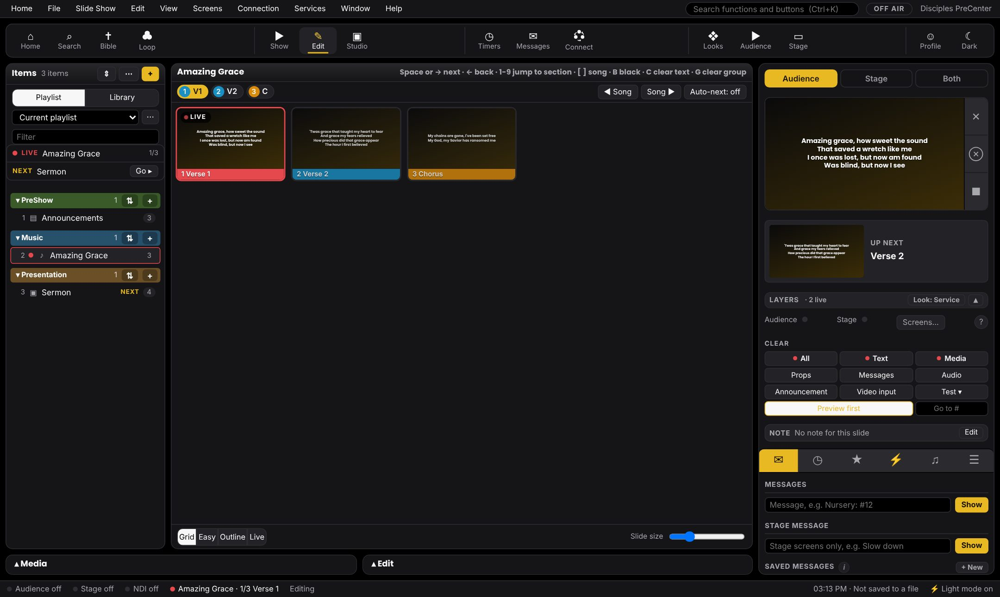
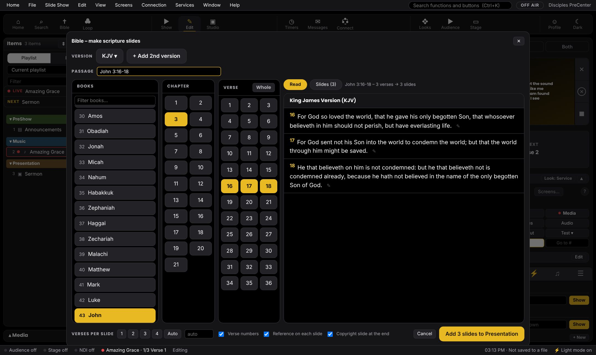
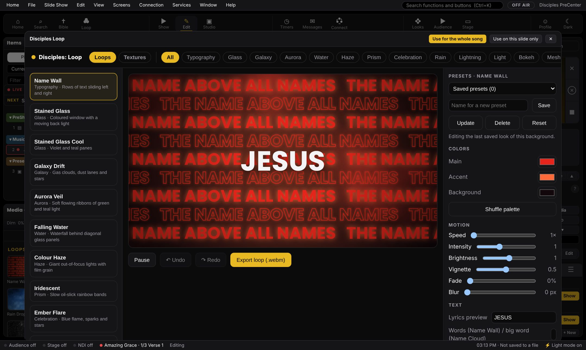
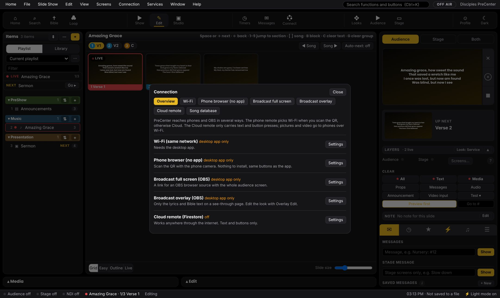

Run the whole service from one window
Arrange your playlist into sections, click a slide to send it live, and always see what's up next. Clear text, media or everything with one button.
Disciples PreCenter is free presentation software for worship services. Songs, Bible passages, announcements, timers and media live in one place, with separate screens for your congregation and your stage.
Audience screen: what the congregation sees
Stage screen: the current slide and what's next
Choose a slide below and watch both screens change.
The screenshots below come from the app itself.
Arrange your playlist into sections, click a slide to send it live, and always see what's up next. Clear text, media or everything with one button.

Type a reference such as John 3:16-18, or pick the book, chapter and verses. Choose how many verses go on a slide, and add a second version beside the first.

Disciples Loop builds animated backgrounds. Change colours, speed and brightness, then use the loop on one slide or a whole song.

With the desktop app, control slides from a phone on the same Wi-Fi by scanning a QR code, or add the audience screen or a lyrics overlay to OBS.

Keep songs organised by verse, chorus and bridge, and reuse them in any service.
Bring in PowerPoint files, images, ChordPro, OpenLyrics, OpenSong and SongSelect lyric files.
Edit text, backgrounds, shapes, animations and transitions.
Give singers and speakers their own view, with the next slide and private messages.
Save screen setups for different moments and clear one layer without touching the rest.
Count down to the start of service or time a segment.
Show a notice to the congregation, such as a nursery call, or send one to the stage only.
Let announcements move on by themselves and keep notes only the operator sees.
Save a whole service with its backgrounds and audio to one file and open it on another computer.
Create a playlist, add songs, Scripture and the sermon, and drag them into order.
Set which monitor shows the audience and stage screens, then step through the slides with your team.
Press Space or the arrow keys to move through the service. Number keys jump to a song section.
No subscription. The code is published under the GPL-3.0 licence.
Start as a guest. Sign in with Google only if you want your songs backed up and synced.
They are saved on your computer. Online backups are visible only to your account, not to other users.
PreCenter is part of the Disciples family of worship tools. It was made to ease the work of presenting church services, so worship teams can run a service smoothly.
It is developed in the open. You can read the code, report a problem or suggest a feature on GitHub.
Yes. There is no paid version or subscription.
No. Guest mode works without one. Google sign-in adds private song backup and sync. Some team features need an invited Disciples team account.
Your work is saved on your device, and the Windows app carries a built-in copy for when the online page can't be reached. Sync and online services need a connection. Test your setup offline before relying on it.
If you are signed in, your songs are backed up online and other users cannot see them. The people running the service have technical access, as explained in the Privacy Policy.
Many lyrics are protected by copyright. Use songs that are public domain or that your church has permission or a licence to use.
An installer that isn't code-signed triggers this warning. Download only from the official releases page, then choose More info and Run anyway.
Includes the Wi-Fi phone remote, OBS broadcast links and a folder copy of your songs.
Download for Windows